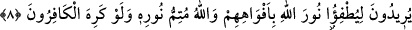

saraya girdi ve ziyâfetten yedi. Sarayın sâhibi efendi ondan râzı oldu. Gönderilen
dâvetçiye uymayan bu saraya giremedi ve müstesnâ ziyâfetten yiyemedi ve Efendi de
ona kızdı. Rasûlullah (a.s.) buyurdu: Efendi bizzat Allah’tır, dâvetçi de Muhammed
(s.a.) dır. Ev (saray), İslam dinidir, ikram için karşılıksız hazırlanan ziyâfet de
cennettir.”[112] Peygamberimiz’in vârislerinin dâvetleri de bu dâvete dâhildir. Çünkü,
“Ben Allah’a çağırıyorum, ben ve bana uyanlar aydınlık bir yol üzerindeyiz...”
(Yusuf, 12/108) buyurmuştur. Dâvetçinin de ya emîr veya me’mur olması kaçınılmazdır.
Mesabih adlı eserin ilim bölümünde Ebû Dâvûd ve İbn Mâce’nin rivâyet ettiklerine
göre Avf b. Mâlik (r.a.) şöyle der: Halka nasihat için anlatan ya emir, ya me’mur veya
kibirlenen kimsedir. Rivâyette geçen muhtal, mütekebbir yâni kendini büyük gören
kimsedir. Burada kasdedilen emir, memur ve emirden izinli olmayan vâizdir. Bu
nitelikte olan kimse kendini büyük gören fuzûlî ve başkanlık arayan kimsedir. Bu rivâyet
yalnız hutbe konusundadır, Mefatih adlı eserde kayd edildiği gibi.
“Allah, zâlimler topluluğunu doğru yola iletmez.” Kendisine yönelmedikleri için,
kurtuluşları olan felaha iletmez.
8. Onlar ağızlarıyla Allah’ın nûrunu söndürmek istiyorlar. Halbuki kâfirler
istemeseler de Allah nûrunu tamamlayacaktır.
“Onlar ağızlarıyla” dini kötüleyerek, dil uzatarak “Allah’ın nurunu söndürmek
istiyorlar.” Onlar Allah’ın dinini veya kitabını ya da parlak huccetini söndürmek
istiyorlar, demektir. Veya Allah’ın nurunu söndürmek için iftirâ etmek istiyorlar,
demektir.
Râğıb, Müfredat adlı eserinde şöyle der: Allah’ın nurunu söndürmek isterler, demek
Allah’ın nurunu gizlemeyi hedefliyorlar, demektir. Yine, Allah’ın nurunu söndürme
amacına ulaştıracak bir fırsat elde etmek istiyorlar, demektir. Onların durumları,
söndürmek için güneşin nuruna üfleyen akılsızların durumuna benzetilmiştir.
“Halbuki kâfirler istemeseler de Allah nurunu tamamlayacaktır.” Allah dinini
yüceltmek ve dünyaya yaymak sûretiyle amacına ulaştıracak, tamamlanmasını
istememelerine rağmen onu tamamlayacak ve kalplerindeki inkârcılık hastalıklarını
arttıracaktır. Yâni bundan hoşlanmasalar da Allah bunu şüphesiz ki, yapacaktır.
Kâşifî demiştir ki: “Onların rahatsız olmaları doğruluk çerağının sönmesine tesir
etmez. Bu durum, yarasanın güneşin yok olmasına tesirinin bulunmamasına benzer.
Yarasa güneş olmasın ister
Zira ancak bu şekilde yeryüzünü görebilir
Uğursuz yarasanın körlüğü artsın diye